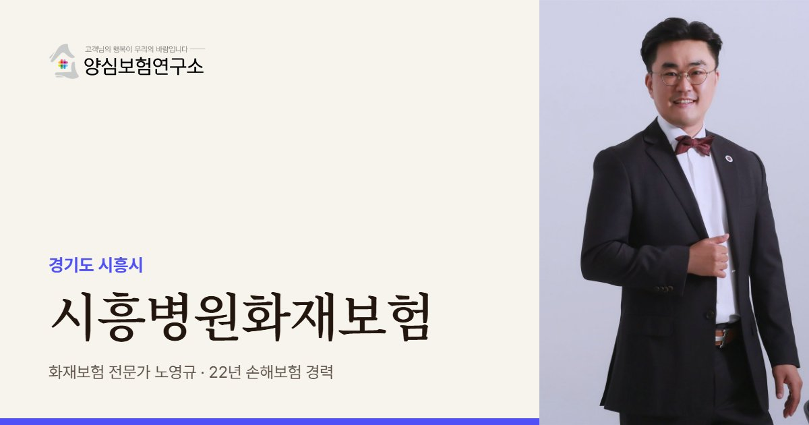

배곧은 빈 상가 사이에서 문을 연 의원이 많습니다. 노영규 대표는 같은 층에 비어 있는 호실이 얼마나 되는지, 빈 곳을 누가 관리하는지부터 확인합니다.
시흥 안내
시흥병원화재보험은 시흥시 병의원이 불로 입을 수 있는 인테리어·장비·약품 손해와 환자, 이웃 점포에 대한 배상책임을 함께 대비하는 보험에 해당합니다. 시흥, 특히 배곧신도시는 대형 병원이 아직 없어 동네 의원의 역할이 유난히 큰 곳입니다.
배곧동에는 지상 12층, 800병상 규모의 대학병원이 들어설 예정입니다. 2019년 설립 협약, 2021년 예비타당성 조사 통과를 거쳤지만 입찰이 네 차례 무산되며 일정이 밀렸고, 시는 2029년 완공을 목표로 공사를 진행한다고 밝혔습니다. 2024년 보도에서는 부지 주변 상가 공실이 채워지지 않아 주민들의 하소연이 이어졌습니다.
그래서 배곧의 의원은 절반쯤 빈 상가 건물에서 진료하는 경우가 있습니다. 비어 있는 호실은 사람이 드나들지 않아 누전이나 방치된 짐에서 시작된 불을 늦게 알아차리기 쉽고, 새 임차인이 들어올 때마다 인테리어 공사가 이어집니다.
정왕동은 시화산업단지와 붙은 주거지입니다. 보건지소가 외국인 근로자 진료를 지원해 왔고, 공항과 공단이 가깝다는 점을 내세워 국제진료센터를 둔 병원도 있습니다. 교대 근무자를 위해 늦게까지 문을 여는 의원이 많아 배곧과는 다른 시간대의 위험을 봐야 합니다. 같은 시흥이라도 동네마다 점검 순서가 달라집니다.
주요 위험
사람이 없는 공실에서 난 불은 발견이 늦어 우리 의원까지 번진 뒤에야 알게 될 수 있습니다.
공실이 채워질 때마다 공사가 이어져 불티와 자재 적치 위험이 반복됩니다.
대형 병원이 멀어 처치실 장비와 산소를 갖춘 의원이 많아 장비 가입금액이 커집니다.
해안에 가까운 배곧은 습기로 콘센트와 배전반이 상하지 않는지 자주 살핍니다.
교대 근무자를 위해 밤늦게 여는 의원은 마감 때 기기 전원을 끄는 순서를 정해 둡니다.
배곧·정왕의 한의원, 한방병원은 뜸과 온열 치료기 주변 가연물을 정리해 둡니다.
※ 실제 보장 여부와 한도, 면책 사항은 가입하는 상품의 약관과 병원 현황에 따라 달라집니다.
방문 상담
배곧신도시 상가 의원과 정왕동, 은계지구 병원을 직접 찾아갑니다. 같은 층 공실과 공사 일정을 함께 살펴보고 설계합니다.
꼭 확인할 점검 항목
고객 후기


※ 실제 계약고객과 나눈 카카오톡 상담과 후기 일부이며, 개인정보는 가렸습니다.
지역 상담 Q&A
공실 자체로 가입이 막히지는 않지만 발견이 늦는 위험이 있어, 감지기와 관리 상태를 확인해 두는 것이 좋습니다. 옆 공실에서 번진 손해도 내 보험 범위를 먼저 확인하세요.
병원이 생긴다고 계약이 저절로 바뀌지는 않습니다. 다만 처치실을 줄이거나 진료과를 늘리는 등 재산이 달라지면 가입금액을 다시 맞춰야 합니다.
대피 중 환자 부상은 배상책임 영역이라, 화재보험과 함께 배상책임을 준비해 두면 보상 대상이 될 수 있습니다. 외국어 대피 안내도 갖춰 두기를 권합니다.
이전 날짜를 기준으로 옛 주소의 보장이 끝나고 새 주소의 보장이 시작되도록 맞출 수 있습니다. 이사 기간 중 장비가 어디에 있는지도 함께 알려 주세요.
같은 층 공실과 공사 일정, 처치실 장비까지 함께 보고 계약을 정리해 드립니다.
 MGF 베스트스토리텔러
MGF 베스트스토리텔러 단행본 출간
단행본 출간 월간 칼럼 연재
월간 칼럼 연재 고객 소개 후기
고객 소개 후기 지인 소개 후기
지인 소개 후기